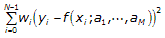
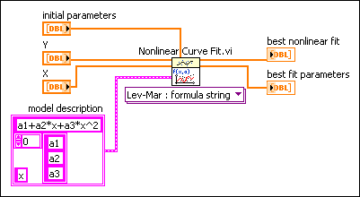
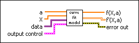
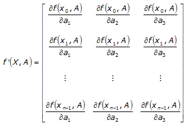

The Nonlinear Curve Fit VI assumes that you have prior knowledge of the nonlinear relationship between the independent variable x and dependent variable y, as shown in the equation below.
Y = f(X;a1, a2, ..., aM)
where M is the number of unknown coefficients.
The Levenberg-Marquardt algorithm determines the set of coefficients (a1, a2, ..., aM) that best fits the observations. The best fit coefficients minimize the following equation, which describes the distance between the curve and the fitted model.

where N is the length of Y and yi, xi and wi are the i-th element of Y, X and Weight, respectively.
You can use a formula string or a model VI with the Nonlinear Curve Fit VI to specify the nonlinear function Y = f(X;a1, a2, ..., aM).
In the Nonlinear Curve Fit LM Formula String instance of the Nonlinear Curve Fit VI, you can describe the nonlinear function f in model description. The following block diagram shows how to define f according to the following equation:
f(x) = a1 + a2*x + a3*x2
where x is the independent variable and a1, a2, and a3 are three unknown coefficients.

In the Nonlinear Curve Fit LM instance of the Nonlinear Curve Fit VI, you must provide a model VI with the connector pattern shown in the following illustration.

Then create a reference to the model VI and wire the reference to the f(x,a) input of the Nonlinear Curve Fit VI.
The model VI accepts X and the set of coefficients (a1, a2, ..., aM) as inputs and returns f(X;a1, a2, ..., aM) and a 2D array of the partial derivatives with respect to the coefficients.
The following example describes the layout of the partial derivative matrix of a function with three coefficients and n X values.

The number of columns in the matrix is equal to the number of coefficients, while the number of rows in the matrix is equal to the number of X values.
The calculation of the partial derivatives is optional. If you do not calculate the derivatives in the model VI and you wire an empty array indicator to the f'(X,a) output, the Nonlinear Curve Fit VI calculates the derivatives numerically.